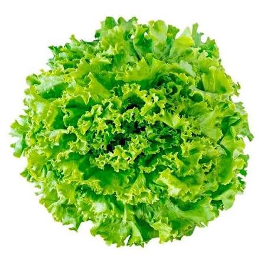

🌱 Descrição
A alface crespa é uma hortaliça folhosa muito apreciada por suas folhas verdes, macias e onduladas. É uma das variedades de alface mais cultivadas nas hortas escolares e familiares devido ao seu rápido crescimento e alto valor nutricional.
🌎 Origem
Originária da região do Mediterrâneo, a alface é cultivada há milhares de anos e atualmente está presente em praticamente todo o mundo.
🌱 Cuidados
- ☀️ Prefere sol da manhã ou meia sombra.
- 💧 Regar frequentemente, mantendo o solo úmido.
- 🌿 Solo fértil, leve e rico em matéria orgânica.
- 🌱 Evitar encharcamento.
🦋 Atrai quais polinizadores?
Quando floresce, atrai abelhas e pequenos insetos polinizadores.
🍽️ Parte comestível
As folhas.
💚 Benefícios para a saúde
Rica em fibras, vitaminas A, C e K, além de minerais que contribuem para uma alimentação saudável e equilibrada.
🌼 Curiosidade
Existem diversas variedades de alface, diferenciadas pelo formato, textura e coloração das folhas.
🐝 Importância para o meio ambiente
Contribui para a diversidade da horta escolar, favorece práticas sustentáveis e incentiva hábitos alimentares saudáveis.
🌾 Época de plantio
Pode ser cultivada durante todo o ano, principalmente em regiões de clima ameno.
📱 Conheça mais sobre a Alface Crespa
Aponte a câmera do celular para o QR Code e descubra mais informações sobre esta planta.